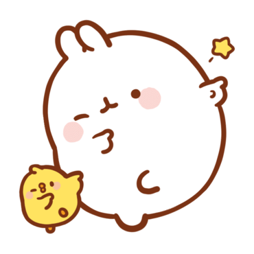

CUTIE
익명이

몰랑이

망붕이
귀여운 거 좋아! 진짜 좋아! 특히 이 삼인방 사랑합니다!
엽기떡볶이, 신전떡볶이, 각종 즉석떡볶이.
여러분, 치즈 토핑은 진리입니다!
치킨도 좋고, 삼겹살도 좋고, 우리나라에는 맛있는게 너~무나도 많지만 이것도 절대 빠질 수 없다 생각합니다.
음료, 아이스크림, 초콜릿, 케이크와 같은 녹차가 들어간 디저트 전부 좋아하지만, 정작 일반 녹차는 카페인 때문에 많이 못 마십니다.
그래도 녹차의 씁쓰름한 맛 때문에 애정한다는 거!

6보컬, 6래퍼, 6투비.
실력, 예능감 뭐 하나 빠지지 않는(사실 제정신 하나 빠진) 실력파 그룹입니다.
추천하고 싶은 곡은 너무 많지만 그 중에서도 <너없인 안된다>, <그리워하다>, <기도>.
시원한 밴드곡이 듣고싶다면 이 그룹을 찾아주세요. 노래도 끝내주고, 라이브는 더 끝내줍니다.
<옥탑방>이 제일 많이 알려져있지만 사실 숨겨진 명곡이 더 많다는 사실!
<Moonshot>, <Autumn Dream>, <놔>를 추천합니다.
칼군무의 정석. 자급자족의 대명사.
장르를 넘나들며 다양한 매력을 보여주고 있는 훌륭한 그룹입니다.
감성적인 곡들도 많지만 개인적으로 힘들때 들으면 아주 좋은 <아주 NICE>, <박수>, <HOME;RUN>을 추천해드립니다.
지금 이 페이지도 이 노래들 들으면서 만드는 중.
몽환과 락이 만났다!
'악몽'을 주제로 한 어두운 분위기 속에서 메탈 사운드와 파워풀한 군무로 무대를 찢어놓습니다.
추천곡은 <YOU AND I>, <BOCA>, <Odd Eye>.
지금은 비록 해체되었으나 데뷔곡부터 마지막 앨범까지 줄줄이 명곡이었던 그룹.
이제는 이들의 개인 활동을 응원하며 당시의 무대영상을 돌려봅니다.
한번 들으면 머릿속에서 자동재생되는 <하늘 위로>, <Panorama>, 그리고 개인적으로 좋아하는 <FIESTA>와 <SPACESHIP>을 추천합니다.
데뷔한지 이제 2년.
울림 소속답게 그 격한 춤을 추면서도 흔들리지 않는 가창력을 보여줍니다.
아직은 어리지만 크게 성장하길 응원하며 <빔밤붐>과 <Ring Ring>을 추천해드립니다.